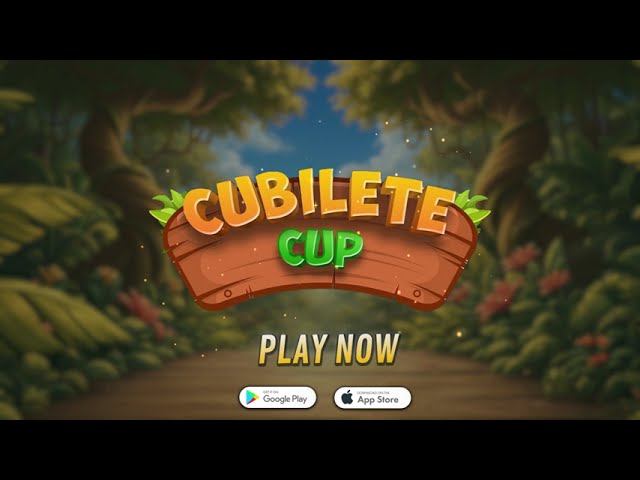

Cubilete Cup
Unity C# SystemsGame Overview
Cubilete Cup is a competitive multiplayer dice game built in Unity with progression, unlockable cosmetics, in-game currency, and online multiplayer.
During my internship, I worked primarily on the game’s shop, economy, and cosmetic systems. My work included handling purchases, saving unlocked content, syncing player currency, and making sure equipped cosmetics appeared correctly for other players in multiplayer.
What I Worked On
- Created in-game shop features using Unity IAP, including product setup, purchase handling, and unlocks.
- Built cosmetic unlock and equip systems for dice, cups, tables, avatars, and music.
- Implemented PlayFab cloud saving and TropiCoins currency syncing across sessions and devices.
- Added multiplayer cosmetic syncing so equipped items display correctly for other players.
- Helped newer interns understand the codebase and troubleshoot development issues.